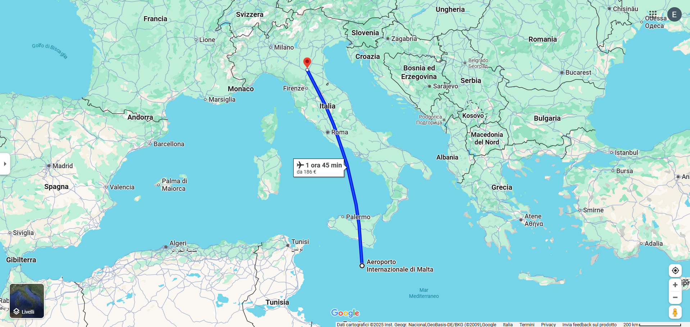
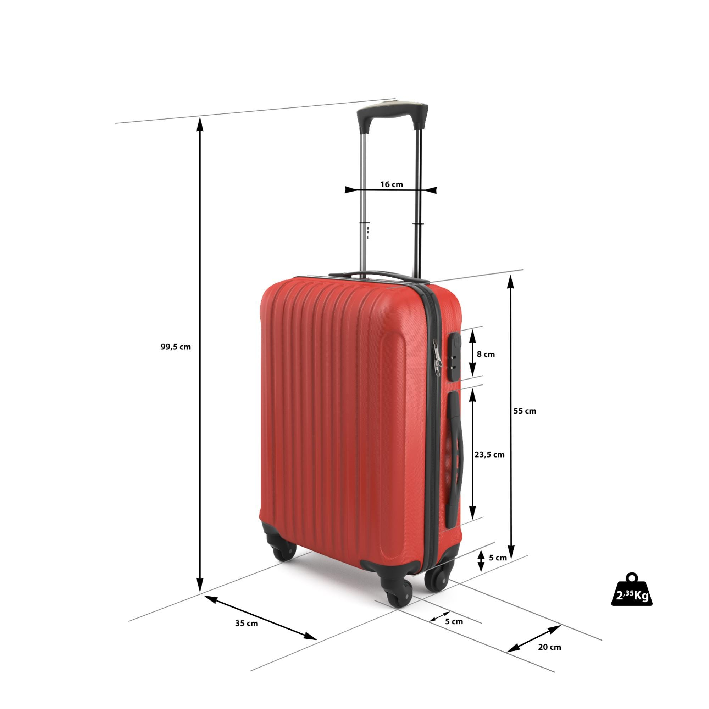
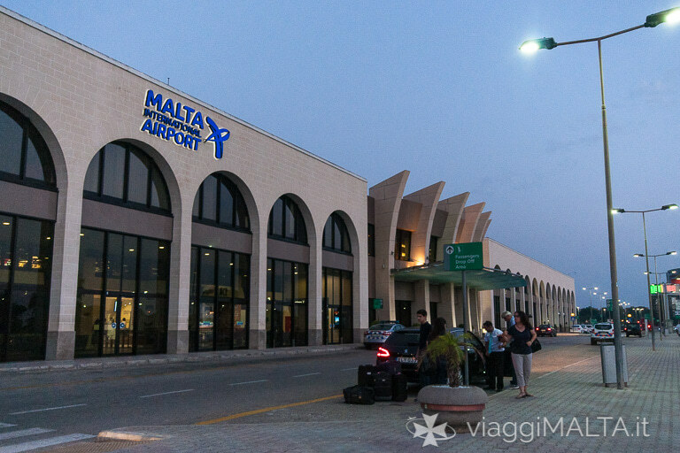

Il Viaggio in Aereo: Arrivare a Malta
Tutto ciò che c'è da sapere sul tuo volo verso l'isola, dall'aeroporto di partenza a quello di arrivo.

1. Dettagli del Volo e Compagnie Aeree
Malta è ben collegata con l'Italia e le principali città europee grazie a voli diretti, sia di compagnie di linea che low-cost. L'aeroporto internazionale di Malta (MLA) è l'unico scalo dell'isola.
- Compagnie Aeree: Le più comuni includono Ryanair, easyJet, Wizz Air, KM Malta Airlines (ex Air Malta), e altre compagnie di linea come ITA Airways.
- Durata del Volo: Dall'Aeroporto di Bologna Guglielmo Marconi (BLQ), la durata media del volo è di circa 1 ora e 30 - 45 minuti.
- Orari: I voli per Malta sono frequenti, con diverse opzioni durante la giornata, soprattutto nella stagione turistica.
2. Documenti Essenziali per il Volo (Informazioni Generali)
Prima di partire, assicurati di avere tutti i documenti necessari a portata di mano. Un controllo accurato ti eviterà spiacevoli sorprese in aeroporto.
- Documento d'Identità: Per i cittadini UE/Schengen, è sufficiente la carta d'identità valida per l'espatrio o il passaporto. Per i cittadini extra-UE, il passaporto è sempre obbligatorio e potrebbe essere richiesto un visto. Controlla la scadenza!
- Carta d'Imbarco (Boarding Pass): Che sia stampata o in formato digitale sul tuo smartphone, è il documento chiave per accedere al gate e all'aereo.
- Visto (se richiesto): Se non sei cittadino UE e il tuo paese richiede un visto per entrare a Malta (o nell'Area Schengen), assicurati di averlo ottenuto in anticipo.
- Eventuali Documenti Sanitari: Anche se meno comuni ora, in passato (es. per COVID-19) potevano essere richiesti certificati vaccinali o test. Verifica sempre le normative più recenti prima della partenza.
- Copie Digitali: È buona pratica avere copie digitali (sul telefono, cloud, email) di tutti i documenti importanti in caso di smarrimento degli originali.

Documenti utili da scaricare:
3. Documenti Scaricabili e Consultabili
Per facilitare la tua preparazione, qui puoi trovare alcuni documenti utili da scaricare o consultare direttamente sulla pagina.
4. Consigli per un Volo Sereno
- Check-in Online: Per risparmiare tempo in aeroporto, effettua il check-in online non appena disponibile.
- Bagaglio: Controlla sempre le politiche sul bagaglio (a mano e da stiva) della tua compagnia aerea per evitare costi aggiuntivi.
- Comfort a Bordo: Porta auricolari, un libro o un tablet per l'intrattenimento. Un cuscino da viaggio può rendere il volo più confortevole.
- Arrivo in Aeroporto: Presentati in aeroporto con congruo anticipo (almeno 2 ore per voli Schengen, 3 ore per voli extra-Schengen).


5. L'Aeroporto Internazionale di Malta (MLA)
L'aeroporto di Malta è moderno e funzionale, situato a circa 5 km a sud-ovest della capitale La Valletta.
- Servizi: Troverai ristoranti, caffè, negozi duty-free, cambio valuta, autonoleggi e servizi taxi.
- Trasferimenti: Dall'aeroporto, puoi raggiungere la tua destinazione con autobus pubblici (linee X1, X2, X3, X4), taxi (stazione taxi all'uscita), o servizi di ride-hailing (eCabs, Bolt) precedentemente menzionati.
- Connettività: Wi-Fi gratuito disponibile in aeroporto.